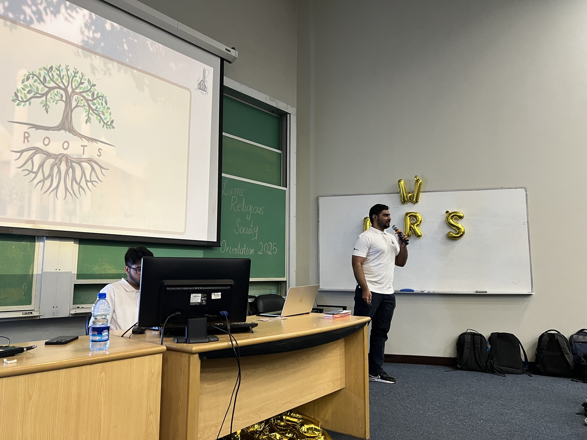
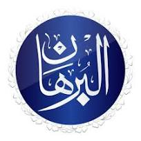
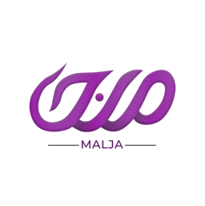
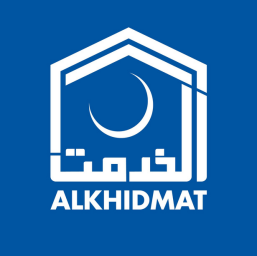
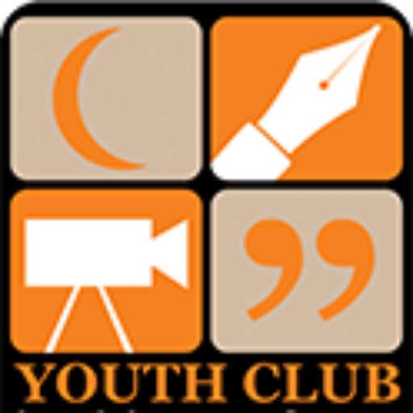
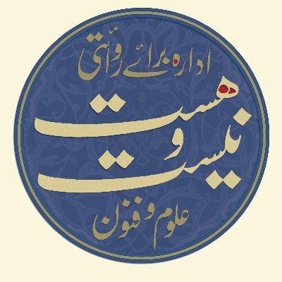
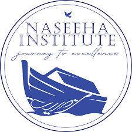

The three pillars of LRS · 01
Spiritual Growth
Weekly halaqas, intensive Surah workshops, and heart-softening reminders centered on Quranic contemplation, Tazkiyah, and deep love for the Prophet (SAW).
About LRS
For over two decades, cultivating a vibrant sanctuary for spiritual enrichment, profound theological learning, and open intellectual discourse across the LUMS community.
The three pillars of LRS · 01
Weekly halaqas, intensive Surah workshops, and heart-softening reminders centered on Quranic contemplation, Tazkiyah, and deep love for the Prophet (SAW).

The three pillars of LRS · 02
Open, fearless exploration of theology, Islamic philosophy, epistemology, and contemporary socio-ethical dilemmas with renowned academics and scholars.

The three pillars of LRS · 03
Translating faith into proactive compassion through nationwide charity drives, active Palestinian solidarity, campus welfare, and youth mentoring.
Our philosophy
At LRS, we believe spiritual conviction is strengthened through sincere inquiry, honest dialogue, and intellectual engagement. We provide an open forum for LUMS students to engage with renowned scholars, explore Islamic philosophy, tackle contemporary moral questions, and bridge the gap between academic disciplines and sacred wisdom.
Contact the societyAssociations & collaborations





